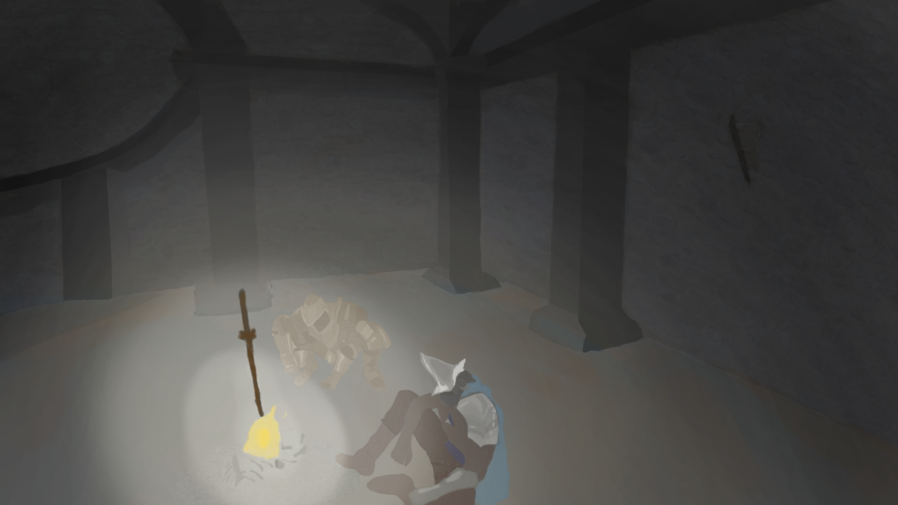

</head>

<body>
 
		    
		<div class="lapp shadow-large">
                    <div class="lapp-image">
                        
                    </div>
                    <!-- End .project-image -->
                    <div class="lapp-info">
                        <h3>Segunda ilustración</h3>
                        <p>
                             Esta es la segunda ilustración del trabajo práctico de la asignatura de expresión artística.
                        </p>
			
                    </div>
                    <!-- End .project-info -->
                </div>
                <!-- End .project -->    
		
	     

</body>

</html>
